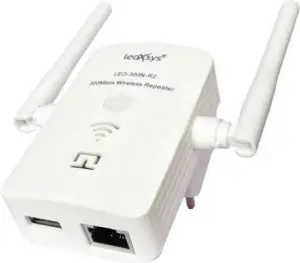

BIODATA DIRI - ALGIE
Informasi

| Nama | : | Algie Muhammad Syah Swargani |
|---|---|---|
| NIM | : | 607012300016 |
| Kelas | : | D3SI-47-02 |
| Tampat Asal | : | Bandung |
| Tgl.Lahir | : | 2 Oktober 2004 |
| Mata Kuliah | : | Arsitektur dan Jaringan Komputer |
| No.HP | : | +62812-3456-7890 |
| : | konohamaru497@gmail.com |
Intermediary Device
-
Perangkat perantara adalah perangkat jaringan yang berguna untuk menghubungkan perangkat jaringan agar dapat saling berkomunikasi satu sama lain. Perangkat perantara berperan sebagai jembatan atau penghubung antara perangkat-perangkat jaringan, sehingga memastikan data dapat sampai ke tempat yang dituju dengan benar.
-
Repeater adalah sebuah alat atau perangkat khusus yang berfungsi untuk menerima dan memperluas jangkauan sinyal WiFi. Selain WiFi, repeater jenis lain juga sering digunakan untuk kabel. Repeater kabel berfungsi untuk memperkuat sinyal yang ditransmisikan via kabel jaringan.

Sumber gambar: https://pemasangan.com/fungsi-repeater-dalam-jaringan-komputer//
- Bridge adalah sebuah alat yang digunakan untuk membuat segmen dan memperluas suatu jaringan. Penggunaan bridge memungkinkan beberapa jaringan terpisah dapat dihubungkan secara aman, termasuk jaringan LAN.

Sumber gambar: https://blog.unnes.ac.id/ayukwitantri/2016/04/01/pengertian-bridge-dan-fungsinya//
- Network Interface Card (NIC) merupakan komponen penting yang digunakan dalam penyediaan jaringan pada komputer atau server. NIC juga dikenal sebagai Network Interface Controller yang berupa circuit board atau chip dan biasanya dipasang di komputer untuk bisa terhubung ke jaringan.
- Bridge adalah sebuah alat yang digunakan untuk membuat segmen dan memperluas suatu jaringan. Penggunaan bridge memungkinkan beberapa jaringan terpisah dapat dihubungkan secara aman, termasuk jaringan LAN.